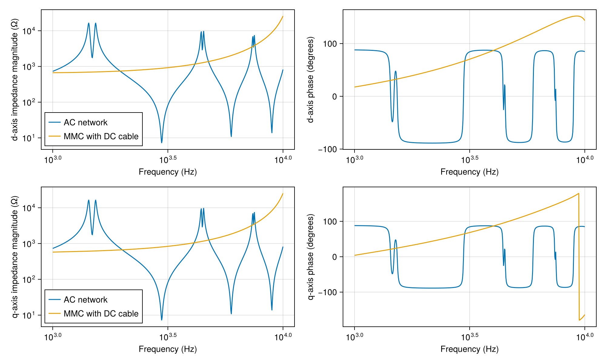
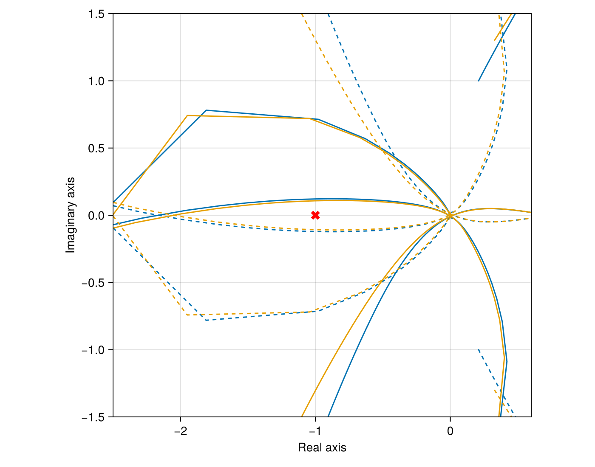

MMC harmonic stability
An HVDC link transfers 1000 MW between 333 kV AC grids through a 140 km DC cable. Each MMC connects through its transformer leakage inductance and a 50 km overhead line. The AC-terminal impedance ratio describes the interaction of the current control and the transmission network.
using PowerImpedance
using CairoMakie
voltage = 333 / sqrt(3);
converter_limits = PowerImpedance.Limits(P_min = -1, P_max = 1, Q_min = -1, Q_max = 1);Converter blocks
The electrical plant contains 50 mH arm inductance, 400 submodules per arm and 10 mF submodule capacitance. Transformer leakage contributes 60 mH, with zero transformer resistance in this case.
electrical = ElectricalMMC(Lᵣ = 60e-3, Rᵣ = 0);Instantaneous measurements supply AC voltage, AC current and DC voltage to the controls.
measurement = Measurement();The inverter's active-power loop sets the d-axis current reference for 1000 MW injection.
power_control = OuterActivePowerControl(pi_ctrl = PIControl(Kp = 0.1, Ki = 31.4159));The rectifier's DC-voltage loop balances the DC power at 640 kV.
dc_control = OuterActiveVdcControl(pi_ctrl = PIControl(Kp = 5, Ki = 15));Reactive-power control sets the q-axis current reference for zero reactive-power injection.
reactive_control = OuterReactiveQControl(pi_ctrl = PIControl(Kp = 0.1, Ki = 31.4159));The inner AC current PI gains correspond to the 150 Hz current-control setting. This loop acts through the combined arm and transformer inductance.
current_control = InnerCurrentPIControl(pi_ctrl = PIControl(Kp = 0.8359, Ki = 569.24),
activate_ω_c_multiplication = false);Circulating current suppression regulates the second-harmonic current between the arms.
internal_control = ΣdqzControlTEC(
ccsc = CirculatingCurrentSuppressionControl(PIControl(Kp = 0.1048, Ki = 48.1914)));The PLL supplies the control angle from the measured AC voltage.
sync = PLLSynchronization(pi_ctrl = PIControl(Kp = 0.28, Ki = 12.5664));The inverter modulation includes a 116 us delay with a 3/3 Padé approximation. Its phase lag increases with frequency and changes the current response near network resonances.
inverter_modulation = UncompensatedModulation(timeDelay = 116e-6, padeOrderNum = 3,
padeOrderDen = 3);The rectifier modulation applies the commanded arm voltages directly.
rectifier_modulation = UncompensatedModulation();The rectifier controls DC voltage and reactive power at its AC terminal.
c1 = let model = mmc(vDC_base = 640, elec = electrical, meas = measurement, sync = sync,
delta_control = ΔdqControlGFL(outer_active = dc_control,
outer_reactive = reactive_control, occ = current_control),
sigma_control = internal_control, modulation = rectifier_modulation,
limits = converter_limits)
b = bases(model)
component(model;
delta_control = (outer_active = (v_dc_ref = 640 / b.v_dc,),
outer_reactive = (q_ref = 0.0,)),
powerflow = (; p_ac = -1000 / b.S,
v_ac = (voltage * sqrt(2)) / b.v_ac))
end;The inverter controls active and reactive power through the delayed current response.
c2 = let model = mmc(vDC_base = 640, elec = electrical, meas = measurement, sync = sync,
delta_control = ΔdqControlGFL(outer_active = power_control,
outer_reactive = reactive_control, occ = current_control),
sigma_control = internal_control, modulation = inverter_modulation,
limits = converter_limits)
b = bases(model)
component(model;
delta_control = (outer_active = (p_ref = 1000 / b.S,),
outer_reactive = (q_ref = 0.0,)),
powerflow = (; v_dc = 640 / b.v_dc,
v_ac = (voltage * sqrt(2)) / b.v_ac))
end;Transmission network
The DC cable has copper cores, metallic screens and magnetic armour separated by insulation. Its distributed inductance and capacitance produce resonances in the converter's DC termination.
dc_line = cable(length = 140e3, positions = [(-0.5, 1), (0.5, 1)],
C1 = Conductor(rₒ = 24.25e-3, ρ = 1.72e-8),
C2 = Conductor(rᵢ = 41.75e-3, rₒ = 46.25e-3, ρ = 22e-8),
C3 = Conductor(rᵢ = 49.75e-3, rₒ = 60.55e-3, ρ = 18e-8, μᵣ = 10),
I1 = Insulator(rᵢ = 24.25e-3, rₒ = 41.75e-3, ϵᵣ = 2.3),
I2 = Insulator(rᵢ = 46.25e-3, rₒ = 49.75e-3, ϵᵣ = 2.3),
I3 = Insulator(rᵢ = 60.55e-3, rₒ = 65.75e-3, ϵᵣ = 2.3));The AC conductors have 10 m phase spacing at 30 m height. The earth has 100 ohm metre resistivity and the line includes two grounded wires.
conductors = Conductors(organization = :flat, nᵇ = 3, nˢᵇ = 1, Rᵈᶜ = 0.063,
rᶜ = 0.015, yᵇᶜ = 30, Δyᵇᶜ = 0, Δxᵇᶜ = 10, Δ̃xᵇᶜ = 0, dˢᵇ = 0, dˢᵃᵍ = 10);
groundwires = Groundwires(
nᵍ = 2, Rᵍᵈᶜ = 0.92, rᵍ = 0.0062, Δxᵍ = 6.5, Δyᵍ = 7.5, dᵍˢᵃᵍ = 10);Line tl1 connects the rectifier to its AC voltage source over 50 km.
tl1 = overhead_line(length = 50e3, conductors = conductors, groundwires = groundwires,
earth_parameters = (1, 1, 100));Line tl2 connects the inverter to its AC voltage source over 50 km.
tl2 = overhead_line(length = 50e3, conductors = conductors, groundwires = groundwires,
earth_parameters = (1, 1, 100));Source g1 fixes the rectifier-side grid voltage at 333 kV line-to-line RMS.
g1 = ac_source(v = voltage * sqrt(2), p = 1000, q = 0);Source g2 fixes the inverter-side grid voltage at the same magnitude.
g2 = ac_source(v = voltage * sqrt(2), p = -1000, q = 0);
elements = (; g1, g2, tl1, tl2, c1, c2, dc_line);The converter DC terminals join opposite ends of the cable. The AC terminals use d and q coordinates, with their ideal sources shorted for small voltage perturbations.
connections = (
NetworkBuilder.Bus(:Grid1; ports = ((:g1, :ac), (:tl1, :side1)), domain = ACDQ),
NetworkBuilder.Bus(:Grid2; ports = ((:g2, :ac), (:tl2, :side1)), domain = ACDQ),
NetworkBuilder.Bus(:Rectifier; ports = ((:c1, :ac), (:tl1, :side2)), domain = ACDQ),
NetworkBuilder.Bus(:Inverter; ports = ((:c2, :ac), (:tl2, :side2)), domain = ACDQ),
NetworkBuilder.Bus(:DC1; ports = ((:c2, :dc), (:dc_line, :side1))),
NetworkBuilder.Bus(:DC2; ports = ((:c1, :dc), (:dc_line, :side2)))
);Impedance ratio at the inverter
The power flow sets the operating point for linearization. Removing tl2 isolates the converter with its DC termination, while removing c2 gives the AC line impedance.
network = NetworkBuilder.define(elements, connections;
options = (; voltageBase = voltage,
power_flow = (; is_bounded = (; bus_voltage = true),
optimizer = (; hessian_approximation = "limited-memory"))));
power_flow = compute(PowerFlowProblem(network), ACDCPowerFlow());
linearized = compute(LinearizationProblem(network, power_flow), AdmittanceLinearization());
converter_impedance = compute(
PowerImpedanceProblem(linearized.network_model;
nodes = [:Inverterd, :Inverterq], eliminated_elements = [:tl2],
frequency_range = (1e3, 1e4, 500)),
NodalImpedance());
grid_impedance = compute(
PowerImpedanceProblem(linearized.network_model;
nodes = [:Inverterd, :Inverterq], eliminated_elements = [:c2],
frequency_range = (1e3, 1e4, 500)),
NodalImpedance());
frequency = real.(grid_impedance.frequencies) ./ (2π);[ Info: LOCALLY_SOLVED
[ Info: Power flow converged successfully.
[ Info: Terminal operating values: Dict{Symbol, NamedTuple}(:g2 => (ac = ACPortValues(271.8933614489328, -6.244813738743402e-39, 971.4788343185851, -178.33708066559146),), :g1 => (ac = ACPortValues(271.8933614489328, -9.010619287585758e-36, -1050.3562766812695, -213.52400850521212),), :c1 => (ac = ACPortValues(257.5908659582559, -0.21366014559190932, 1016.7853746016557, 4.231779662960235e-34), dc = DCPortValues(640.0, -1011.2281213810735)), :c2 => (ac = ACPortValues(274.8943603559354, 0.19625844165660022, -1000.0, 0.0), dc = DCPortValues(635.8809737863601, 1004.7198789749199)))
[ Info: Starting to solve for steady-state solution
[ Info: MMC steady-state solution found!
[ Info: Starting to solve for steady-state solution
[ Info: MMC steady-state solution found!The AC network has paired peaks near 1.43 and 1.54 kHz, followed by pairs near 4.4 and 7.5 kHz. Line inductance and shunt capacitance produce these peaks, while the MMC with its DC cable has a smoother magnitude.
impedances = Figure(size = (1000, 600));
for (index, label) in ((1, "d"), (2, "q"))
axis = Axis(impedances[index, 1]; xlabel = "Frequency (Hz)",
ylabel = "$label-axis impedance magnitude (Ω)", xscale = log10, yscale = log10);
phase = Axis(impedances[index, 2]; xlabel = "Frequency (Hz)",
ylabel = "$label-axis phase (degrees)", xscale = log10);
lines!(axis, frequency, abs.(grid_impedance.response[index, index,
:]); label = "AC network");
lines!(axis, frequency, abs.(converter_impedance.response[index, index, :]);
label = "MMC with DC cable");
lines!(phase, frequency, rad2deg.(angle.(grid_impedance.response[index, index, :])));
lines!(phase, frequency, rad2deg.(angle.(converter_impedance.response[index, index,
:])));
axislegend(axis; position = :lb);
end
impedances
The matrix ratio retains the coupling between d and q currents and voltages. Generalized Nyquist analysis compares its eigenvalue trajectories with the critical point -1.
ratio = similar(grid_impedance.response);
for index in axes(ratio, 3)
ratio[:, :, index] = grid_impedance.response[:, :,
index] / converter_impedance.response[:, :, index];
end
loop_gain = FrequencyResponseResult(LoopGain(), :loopgain, ratio,
grid_impedance.frequencies, grid_impedance.nodes, linearized.network_model, (;));
stability = compute(StabilityProblem(loop_gain), GeneralizedNyquist());The delay rotates the current-control response while the line alternates between capacitive and inductive impedance. Both eigenvalue trajectories cross the real axis to the left of -1, with four clockwise crossings in the Nyquist calculation. The calculation identifies unstable response peaks near 4.7 to 4.8 kHz and 7.5 to 7.6 kHz.
nyquist = Figure(size = (700, 550));
axis = Axis(nyquist[1, 1]; xlabel = "Real axis", ylabel = "Imaginary axis",
aspect = DataAspect());
for (index, locus) in enumerate(eachcol(stability.output.eigenloci))
lines!(axis, real.(locus), imag.(locus); color = Cycled(index));
lines!(axis, real.(locus), -imag.(locus); color = Cycled(index), linestyle = :dash);
end
scatter!(axis, [-1.0], [0.0]; color = :red, marker = :xcross, markersize = 15);
xlims!(axis, -2.5, 0.6);
ylims!(axis, -1.5, 1.5);
nyquist
Back to Examples